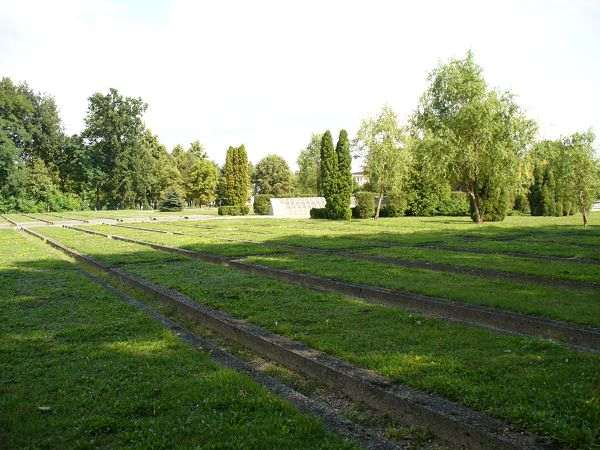

9. Mielec - cmentarz żołnierzy Armii Radzieckiej. Pod koniec sierpnia 1944 roku front ustabilizował się na linii od Zimnej Wody k. Jasła, poprzez Chotową (na zach. od Dębicy), Żarówkę i dalej wzdłuż potoku Jamnica aż do Wisły w rejonie m. Słupiec (na wsch. od Szczucina). Było to południowe skrzydło I Frontu Ukraińskiego dowodzonego przez marsz. Koniewa, zajmowane przez związki taktyczne 60 Armii dowodzonej przez gen. Kuroczkina. Odcinek od Zimnej Wody do Żarówki (wyłącznie) zajęły dywizje piechoty: 304 DP, 100 DP i 148 DP z CVI KA (korpusu armijnego), wchodzącego organizacyjnie w skład 60 Armii. Odcinek od Żarówki do Wisły był obsadzony przez 336 DP. Ofensywa styczniowa zakładała główne uderzenie od przyczółka sandomierskiego, Radomska i Kielc w kierunku na Wrocław. Dla 60 Armii zaplanowano drugorzędną rolę w działaniach wojennych. Mimo tego w okresie od sierpnia 1944 do połowy stycznia 1945 na terenie powiatu mieleckiego zginęło ok. 2 300 żołnierzy Armii Czerwonej, głównie z 336 DP. Wielu z nich zginęło na przedpolach i w samej Żarówce. Ich cmentarz znajduje się w Mielcu.
Jest to nekropolia zadbana, wystawiająca lokalnej władzy bardzo korzystne świadectwo.Pamięć o zmarłych żołnierzach musi być wolna od bieżących zawirowań politycznych. Tak w naszej kulturze jest pojmowane pojęcie człowieczeństwa
Mielec. Główna aleja cmentarza. W części środkowej tablice z nazwiskami zidentyfikowanych żołnierzy Armii Czerwonej.

Mielec. Fragmenty imiennych tablic poległych. 
Mielec. Bezimienne, zbiorowe mogiły żołnierskie.
Mielec. Przy stalowym obelisku - iglicy, autor opracowania Stanisław Cichoń.